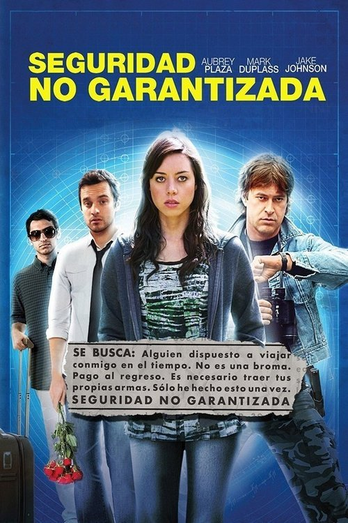

Seguridad no garantizada (2012)

Plataforma: Amazon Prime Video
Puntuación IMDb: 7.1/10
Duración: 1h 38m
Género: Comedia Romántica con elementos de Ciencia Ficción
Sinopsis Rápida
¿Qué harías si recibieras un correo electrónico de alguien que afirma viajar en el tiempo? Una joven asistente legal descubre un correo misterioso que podría cambiar su vida para siempre.
Sinopsis Detallada
{{SINOPSIS_EXTENDIDA}}
¿Por qué tenés que verla?
- Una comedia romántica inteligente y original que te hará reír y reflexionar.
- La química entre los actores principales es excepcional, llevando la película a otro nivel.
- Aunque no es una gran superproducción, ha conseguido un seguimiento de culto por su originalidad y encanto.
- El guion es ingenioso y lleno de diálogos brillantes.
Idea Extra
Análisis de las paradojas temporales en 'Seguridad no garantizada' y cómo se manejan en la trama.